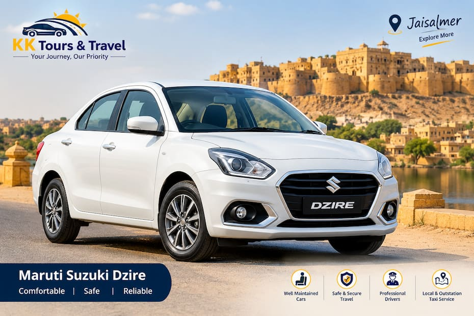

Jaisalmer to Jodhpur
Intercity taxi enquiry


Tell us your pickup point, travel date, destination, number of passengers and luggage needs. We will respond with availability and fare details before you confirm.
Vehicle availability, exact fare and inclusions are confirmed individually. Please mention if you need a return trip.
Tell us pickup location, drop-off point and your travel date.
Discuss passenger count, vehicle suitability, stops and return requirements.
Review the fare and vehicle availability with us before you make a booking decision.